Analisis & Balancing Data menggunakan KNIME#
KNIME (Konstanz Information Miner) adalah software data science gratis dan open source yang menggunakan interface visual berbasis workflow untuk integrasi, analisis, dan visualisasi data.
Notebook ini akan menjelaskan langkah-langkah untuk analisis data khususnya melihat missing value dan deteksi outliers/anomaly pada datasets serta menyeimbangkan data menggunakan SMOTE. Dataset yang akan digunakan adalah dataset Ecoli dari UCI Datasets yang dapat diunduh melalui link berikut: https://archive.ics.uci.edu/dataset/39/ecoli. Semua tahapan tersebut akan dilakukan menggunakan bantuan software KNIME.
Prasyarat#
Sebelum melakukan Analisis dan Balancing data menggunakan KNIME, berikut beberapa prasyarat yang perlu dipenuhi:
Install
Pythonminimal versi 3.9.xInstall
Anaconda/MinicondaDBMS
PostgreSQLInstall
KNIME
Install prasyarat#
Untuk melakukan instalasi, silakan unduh installer masing-masing tools yang bisa diakses melalui link berikut:
Anaconda/Miniconda: https://www.anaconda.com/download/success
PostgreSQL: https://www.postgresql.org/download/
Ikuti semua langkah instalasi hingga selesai
Install KNIME#
Unduh installer KNIME melalui website resminya yang dapat diakses melalui link berikut: https://www.knime.com/downloads.
Ikuti semua langkah instalasi hingga selesai
Setelah berhasil, tampilan awal/homepage aplikasi KNIME akan tampak seperti gambar berikut: 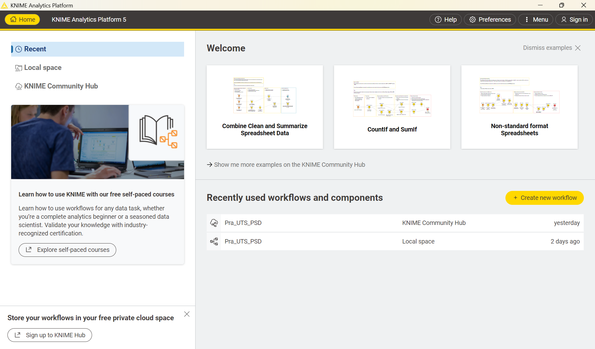
Membuat Workspace di KNIME#
Klik tombol
create new workflowuntuk membuat workflow baru seperti gambar berikut: 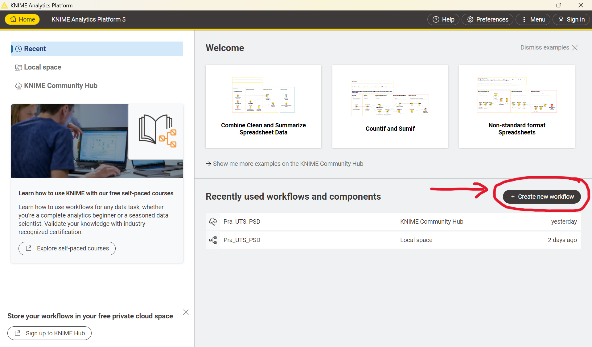Beri nama workflow sesuai dengan workflow yang akan dibangun sebagai contoh Analisis and Balancing Data
Setelah selesai, maka Anda akan diarahkan ke workflow yang sudah dibuat seperti pada gambar berikut: 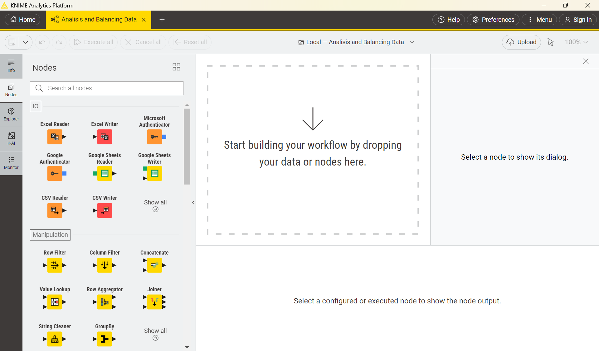 Voila! kita sudah berhasil membuat workflow di KNIME. Selanjutnya kita akan masuk ke bagian paling penting yaitu melakukan tahapan Analisis dan Balancing Data
Get Dataset#
Langkah pertama yang perlu kita lakukan adalah menarik dataset Ecoli yang sudah kita miliki ke dalam KNIME. Dalam notebook ini kita akan menarik data menggunakan PostgreSQL Connector jadi silakan masukkan terlebih dulu dataset Ecoli ke dalam database PostgreSQL, bisa lokal atau menggunakan layanan cloud seperti aiven.
Koneksi Database#
Untuk membuat koneksi dengan DBMS PostgreSQL kita bisa menggunakan Nodes PostgreSQL Connector.
Pada bagian tab Nodes di bagian kiri aplikasi cari PostgreSQL Connector pada kolom pencarian
Drag and Drop Nodes PostgreSQL Connector ke tangah layar seperti gambar berikut: 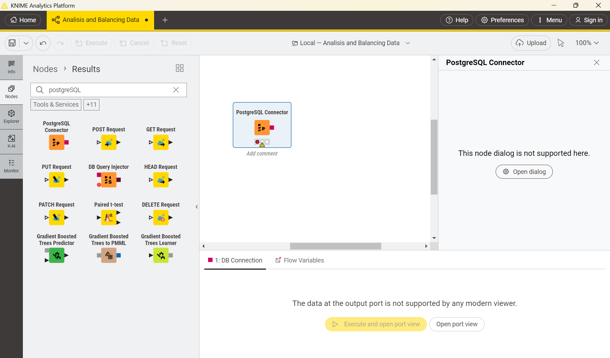
Klik 2x pada Nodes untuk melakukan konfigurasi
Masukkan informasi database PostgreSQL yang digunakan seperti Hostname, Port, Database name, Username dan Password 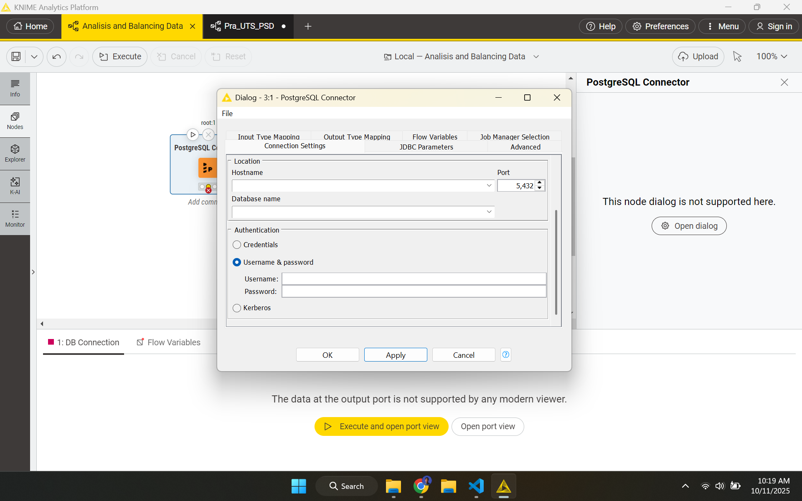
Setelah selesai, klik tombol execute untuk menjalankan Node seperti ditunjukkan gambar berikut: 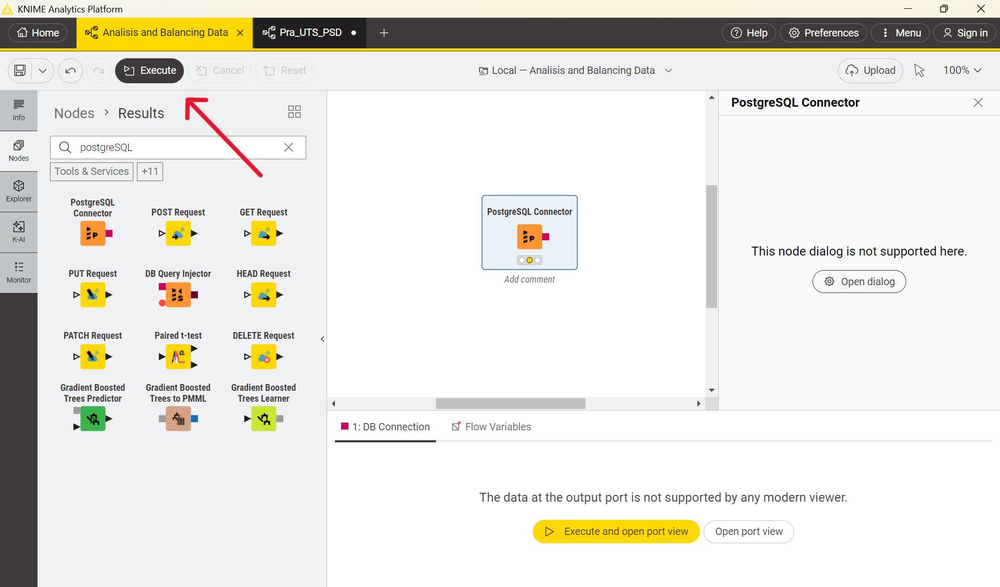
Jika koneksi berhasil akan ditandai dengan indikator berwarna hijau pada Node seperti pada gambar berikut: 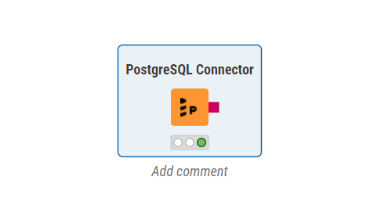
Pilih Table Database#
Pada Node PostgreSQL Connector yang sudah dibuat, tekan dan tarik kotak merah hingga membentuk gari koneksi lalu lepas seperti ditunjukkan pada gambar berikut: 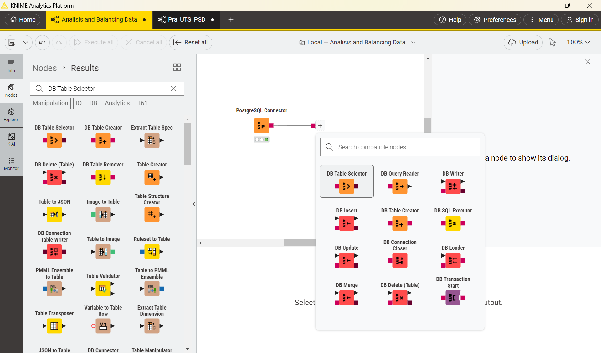
Pilih Node
DB Table Selectorsebagai Node tujuan untuk dihubungkan dengan node PostgreSQL ConnectorPilih schema dan table tempat data Ecoli disimpan seperti gambar berikut: 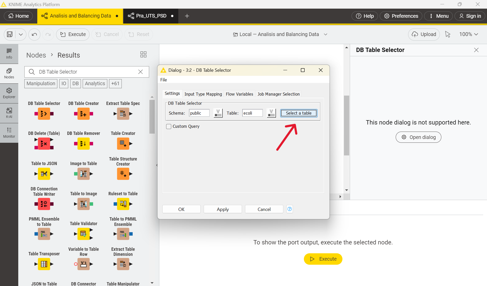 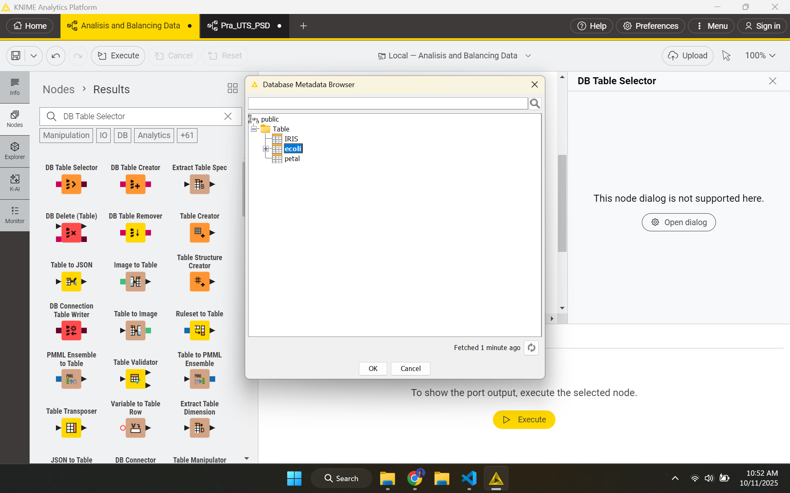
Klik execute dan pastikan indikatornya berwarna hijau
Baca Data Table#
Pada Node DB Table Selector yang sudah dibuat, tekan dan tarik kotak merah hingga membentuk garis koneksi lalu lepas seperti yang dilakukan pada langkah sebelumnya.
Pilih Node
DB Readersebagai Node tujuan untuk dihubungkan dengan node DB Table SelectorKlik execute dan pastikan indikatornya berwarna hijau. Jika berhasil maka akan tampak seperti gambar berikut: 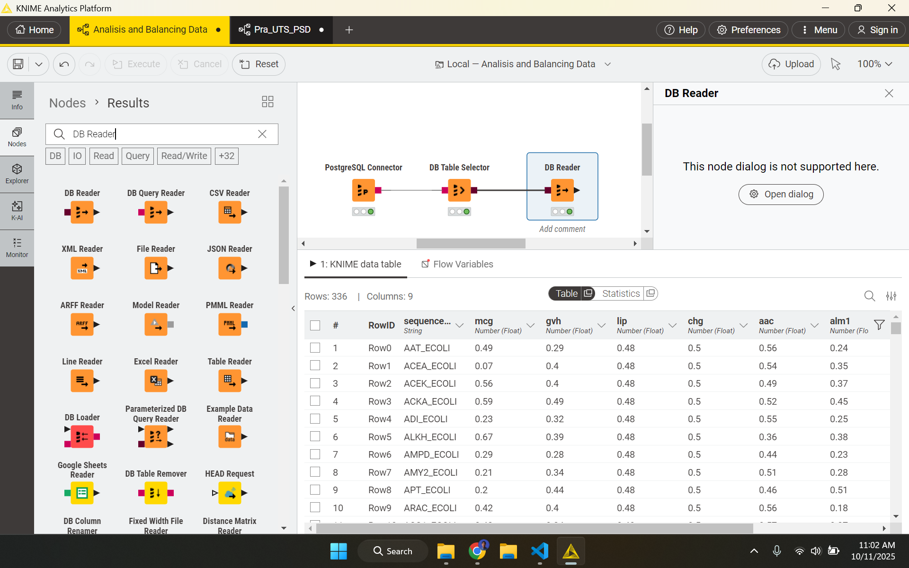
Voila! Kita sudah berhasil menarik dataset Ecoli yang disimpan dalam PostgreSQL ke dalam KNIME yang akan digunakan untuk analisis dan balancing pada tahap selanjutnya.
Analisis Missing Value#
Untuk melakukan analisis missing value sebenarnya KNIME sudah menyediakan Node untuk itu, tapi kita akan mencoba cara yang berbeda yaitu menggunakan Node Script Python (Legacy) untuk menggunakan script python. Sebelum itu, kita perlu install extension KNIME Python Integration agar bisa menggunakan Node Script Python (Legacy).
Setup Python Environment#
Install Python Extension#
Klik tombol menu yang terletak pada pojok kanan atas aplikasi seperti gambar berikut:
Pilih install extensions
Masukkan ‘python’ pada kolom pencarian
Centang extension KNIME Python Integration seperti gambar berikut: 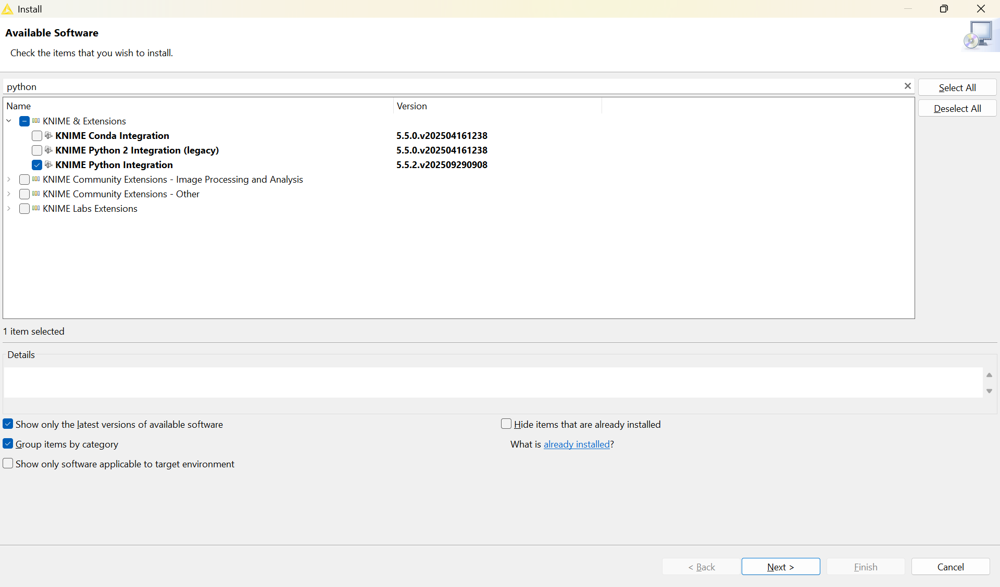
Klik next dan tunggu hingga instalasi selesai
Konfigurasi#
Buat python environment menggunakan conda dengan cara berikut:
Buka Anaconda Prompt
Masukkan prompt berikut:
conda create -n environment_name python=3.x pandas numpy matplotlib scikit-learn -c knime -c conda-forgeGanti ‘environment_name’ dengan nama yang diinginkan dan python version misalnya python=3.10 seperti gambar berikut: 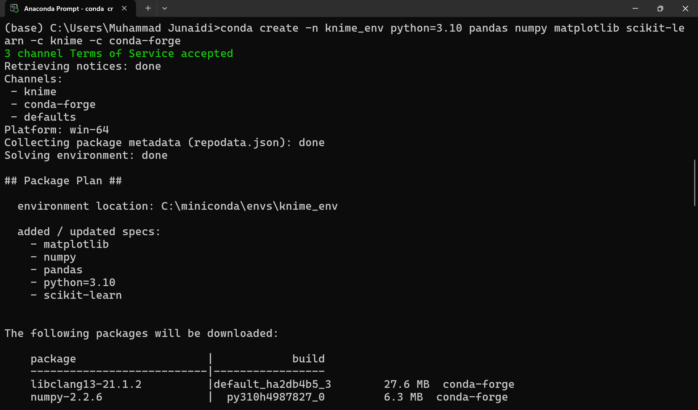Aktifkan environment yang sudah dibuat menggunakan prompt berikut:
conda activate environment_nameGanti ‘environment_name’ dengan nama environment yang dibuat
Konfigurasi environment yang sudah dibuat ke dalam KNIME menggunakan cara berikut:
Klik menu preference pada KNIME seperti gambar berikut: 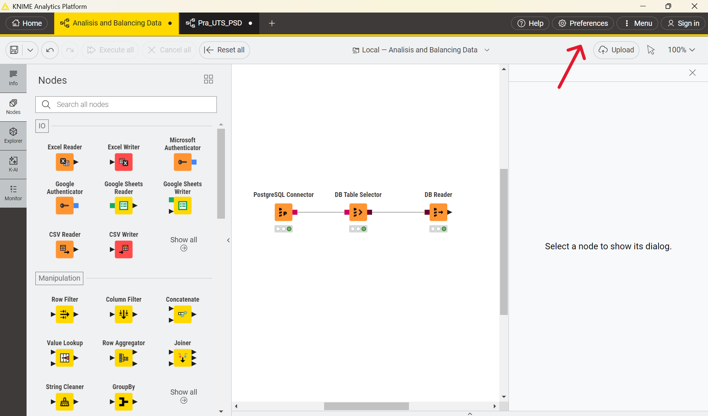
Pilih menu Conda dan masukkan path directory tempat instalasi Anaconda/Miniconda seperti pada gambar berikut: 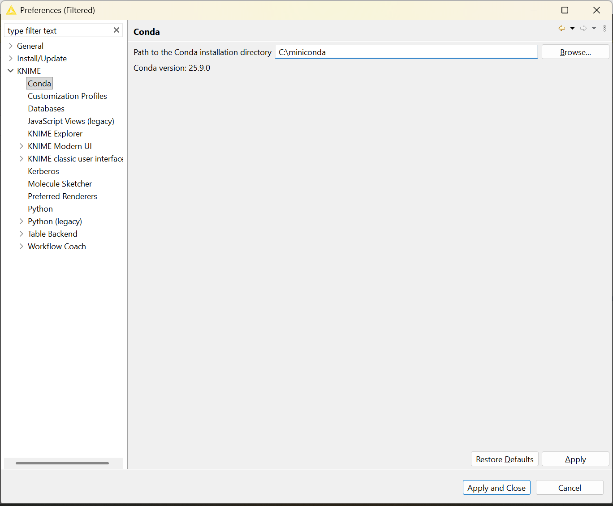
Pilih menu Python(Legacy) dan pilih python environment yang sudah dibuat seperti gambar beriut: 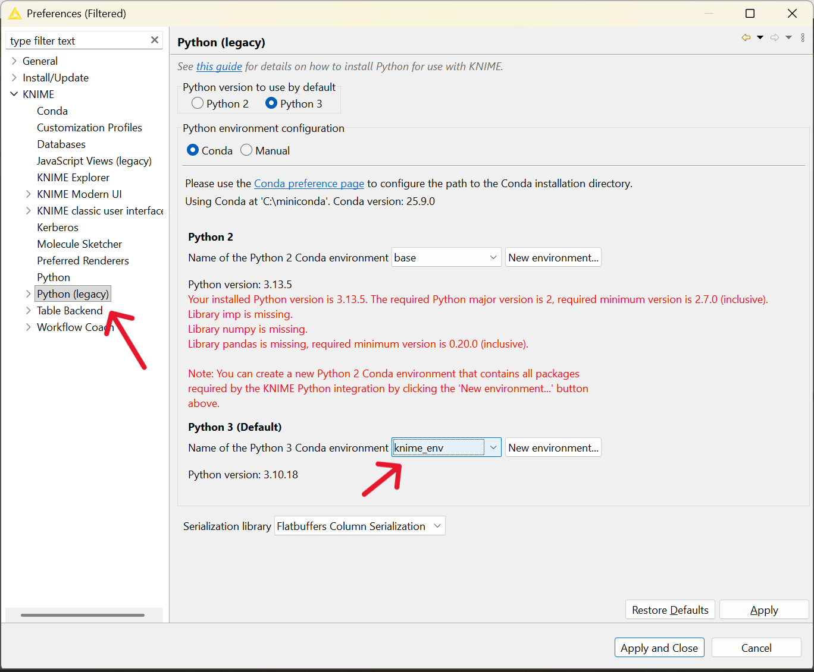
Klik apply and close
Sekarang kita sudah bisa menggunakan Node Python Script pada KNIME
Script Python#
Masuk ke tab Node pada bagian sebelah kiri Aplikasi KNIME
Masukkan ‘python’ pada kolom pencarian
Pilih Node
Python Script (Legacy)dan Drag and Drop Node tersebut ke tengah layar 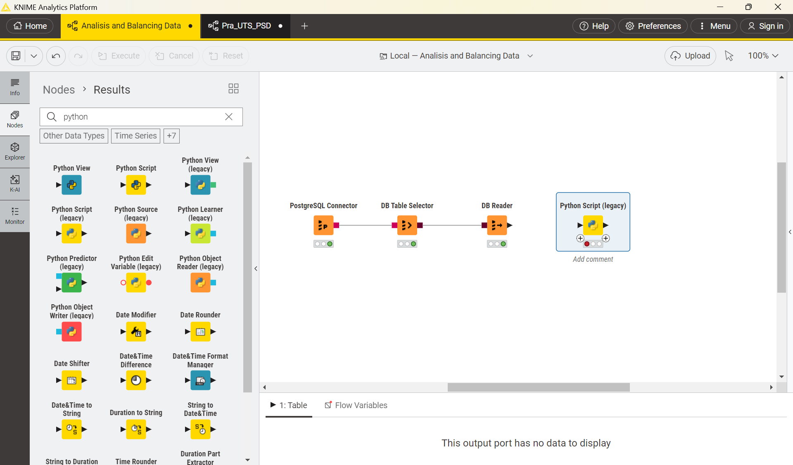Hubungkan Node DB Reader dengan Python Script (Legacy) dengan menarik tombol segitiga hitam pada Node DB Reader ke segitiga hitam bagian belakang node Python Script (Legacy)
Klik 2x pada Node Python Script (Legacy) dan klik tombol ‘Open dialog’. Jika berhasil maka akan muncul dialog seperti pada gambar berikut: 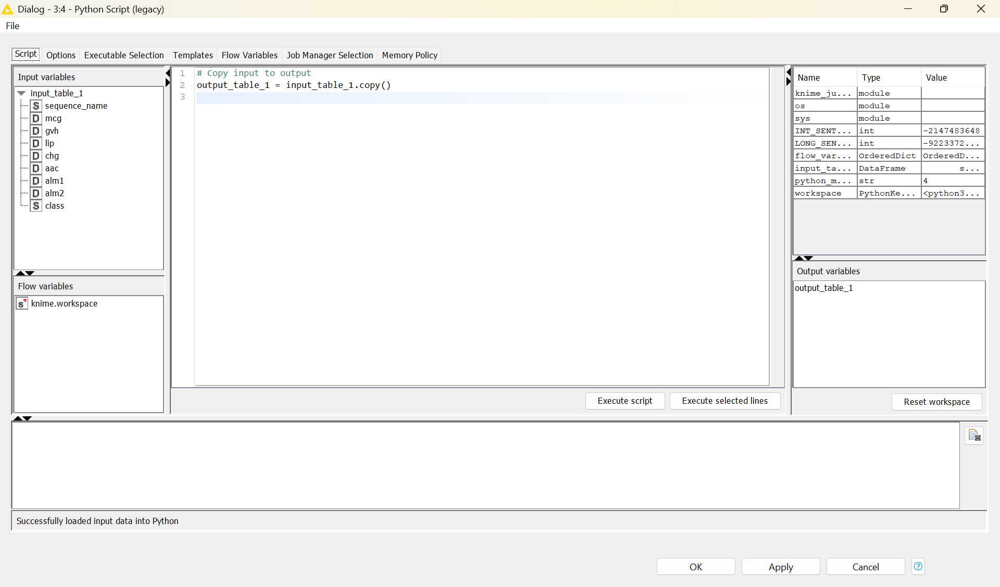
Untuk memeriksa Missing Value bisa masukkan script python berikut:
import pandas as pd
# --- Ambil input dari KNIME ---
data = input_table_1.copy()
# Hitung jumlah missing value per kolom
missing_per_column = data.isnull().sum().reset_index()
missing_per_column.columns = ['Column', 'MissingCount']
# Hitung persentase missing value per kolom
missing_per_column['MissingPercent'] = (missing_per_column['MissingCount'] / len(data)) * 100
# Hitung total missing values di dataset
total_missing = data.isnull().sum().sum()
print(f"Total missing values: {total_missing}")
print(missing_per_column)
output_table_1 = missing_per_column
Klik ‘OK’ pada Dialog
Execute/Jalankan Node Python Script (Legacy), Jika berhasil maka akan menghasilkan tampilan seperti gambar berikut: 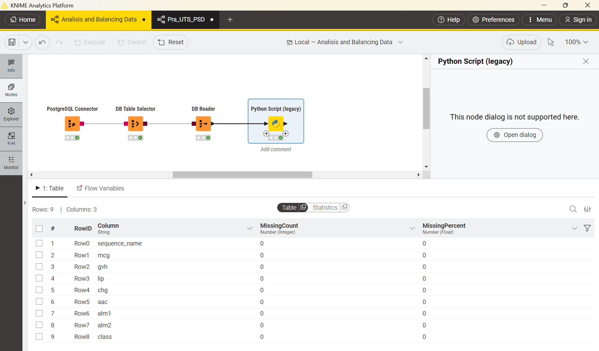
Visualiasi Analisa Missing Value#
Agar lebih menarik, kita bisa gunakan Bar Chart untuk Visualisasi hasil Analisis Missing Value. Berikut langkah-langkahnya:
Tambahkan Node
Bar ChartHubungkan Node tersebut dengan Node
Python Script (Legacy)yang sudah kita buat sebelumnya. Sehingga workspace akan tampak seperti gambar berikut: 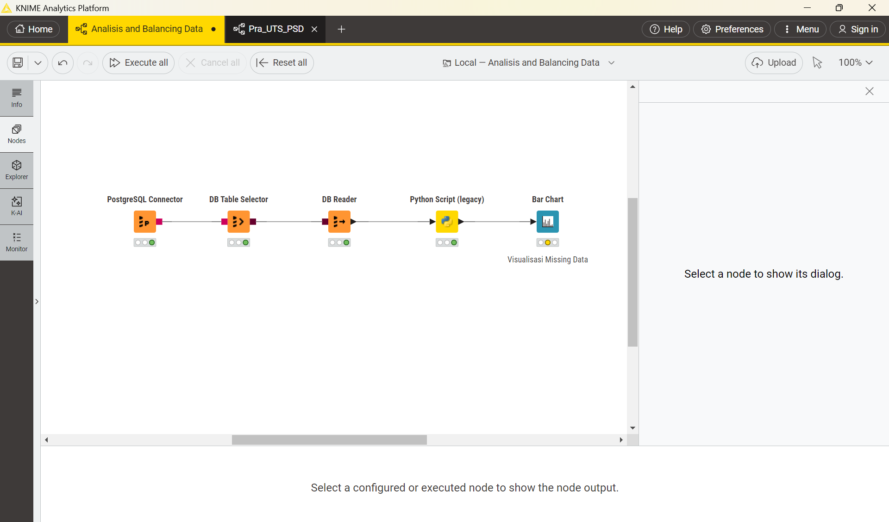Klik 2x pada Node Bar Chart untuk melakukan konfigurasi
Pilih Column sebagai Category Dimension dan Include MissingCount pada Frequency dimensions seperti pada gambar berikut: 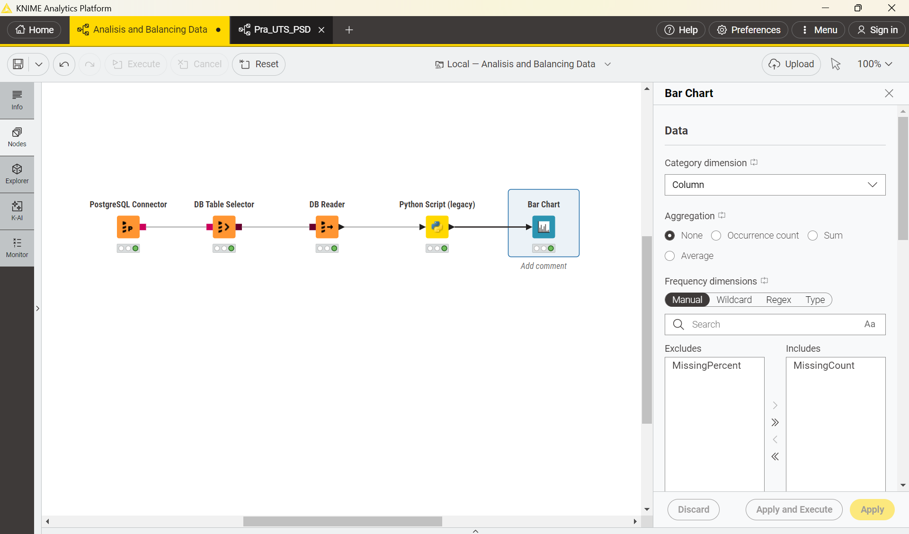
Execute/Jalankan Node Bar Chart, Jika berhasil maka akan menghasilkan tampilan seperti gambar berikut: 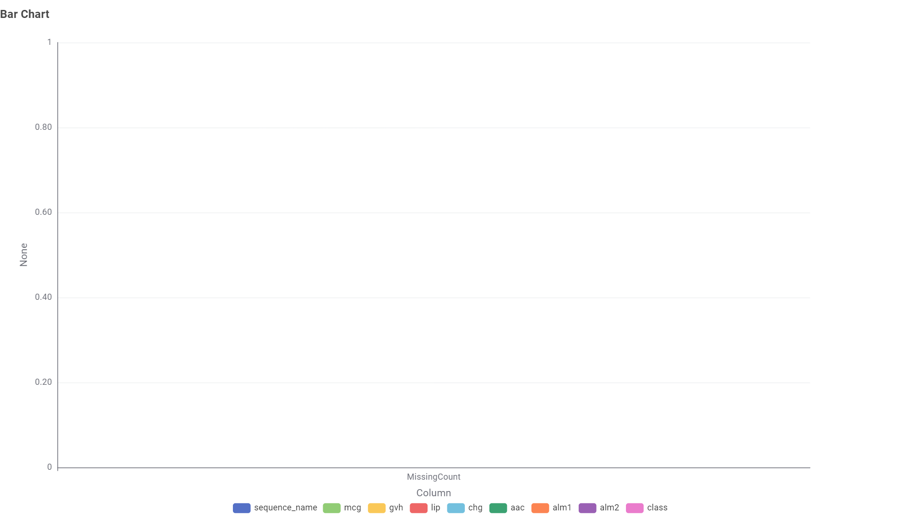
Voila! Kita sudah berhasil memeriksa missing value menggunakan KNIME.
Deteksi Outliers#
Untuk analisis deteksi anomali kita akan menggunakan library pycaret dengan model ABOD. Pada KNIME kita akan menggunakan Node Script Python (Legacy), Color Manager, dan Scatter Plot. Berikut langkah-langkahnya:
Tambahkan Node
Script Python (Legacy)Hubungkan Node
DB ReaderdenganScript Python (Legacy)Masukkan kode berikut pada Box Dialog Node:
# Copy input to output
from pycaret.anomaly import *
table = input_table_1.copy()
feature_numeric = ["mcg", "gvh", "lip", "chg", "aac", "alm1", "alm2"]
feature_non_numeric = ["sequence_name", "class"]
setup(data=table[feature_numeric])
abod = create_model("abod")
df_abod = assign_model(abod)
output_table_1 = df_abod.merge(table[feature_non_numeric], left_index=True, right_index=True)
Kode tersebut akan digunakan untuk deteksi anomaly menggunakan ABOD
Jalankan Node tersebut dan pastikan indikatornya berwarnan hijau
Tambahkan Node Color Manager
Hubungkan Node
Script Python (Legacy)denganColor ManagerKlik 2x pada Node Color Manager untuk melakukann konfigurasi
Pilih Color By ‘Anomaly’ seperti pada gambar berikut: 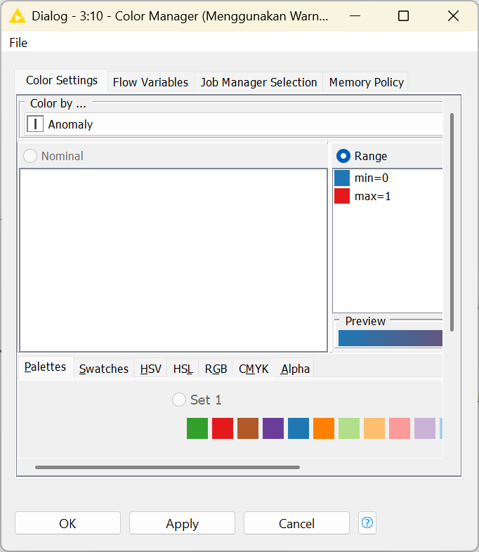
Klik ‘OK’
Jalankan Node tersebut dan pastikan indikatornya berwarnan hijau
Tambahkan Node
Scatter PlotHubungkan Node
Color ManagerdenganScatter PlotKlik 2x pada Node Scatter Plot untuk melakukann konfigurasi
Konfigurasi Scatter plot seperti pada gambar berikut: 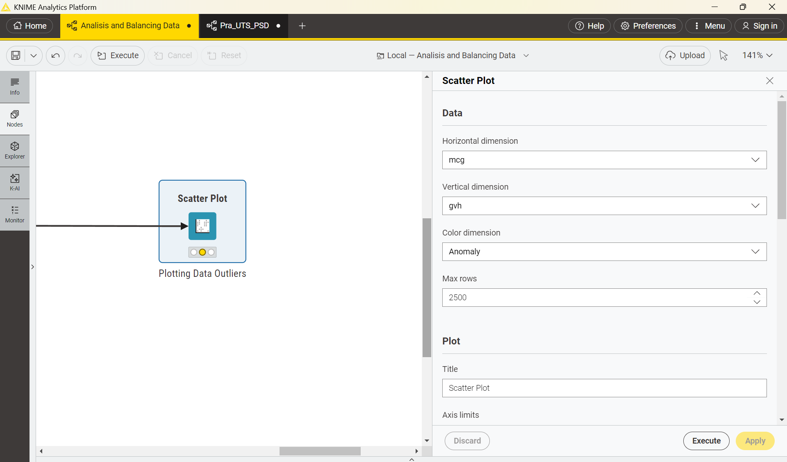
Jalankan Node tersebut dan pastikan indikatornya berwarnan hijau. Jika berhasil maka akan menghasilkan visualisasi seperti gambar berikut: 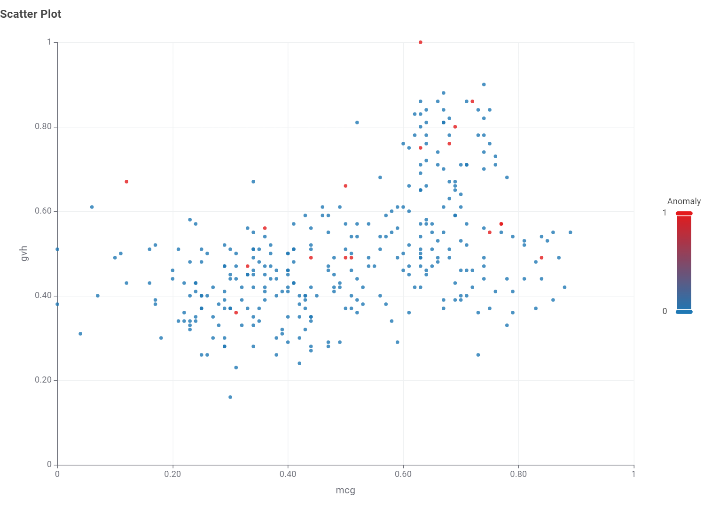
Voila! Kita sudah berhasil melakukan deteksi outliers menggunakan KNIME. Berikut gambat workspace kita saat ini: 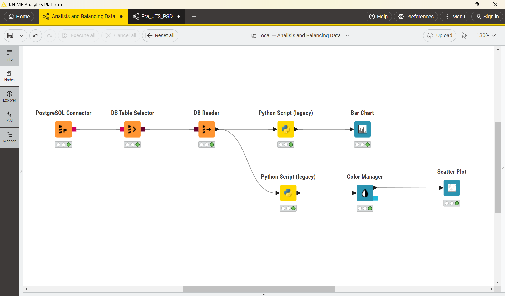
Balacing data menggunakan SMOTE#
Bagian ini akan memperlihatkan perbandingan distribusi data sebelum dan sesudah Balancing menggunakan SMOTE.
Visualisasi Sebelum Balancing#
Untuk membuat visualisasi distribusi data, kita memerlukan Node Group By dan Bar Chart. Group By akan digunakan untuk mengelompokkan data berdarkan class-nya dan Bar Chart untuk menampilkan visualisasinya.
Tambahkan Node Group By
Hubungkan Node
Group BydenganDB ReaderKlik 2x pada Node Group By untuk melakukan konfigurasi
Pada Tab Groups, masukkan class ke dalam Group Columns seperti pada gambar berikut: 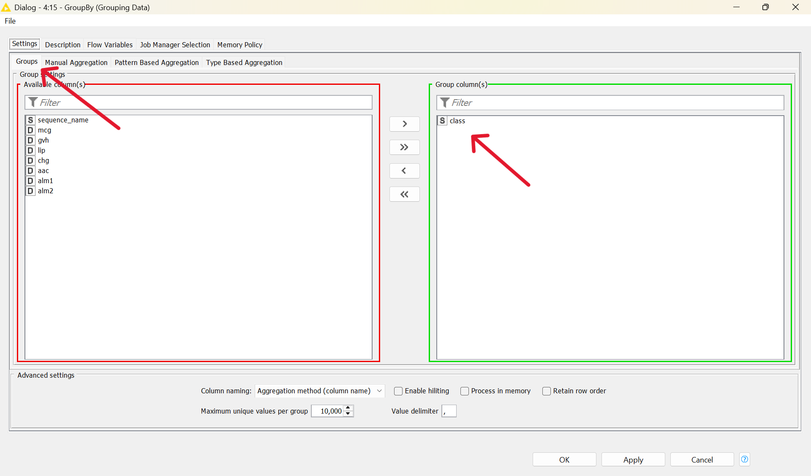
Pada Tab Manual Agregation, Pilih salah satu class numerik dan pilih ‘Count’ pada kolom aggregation seperti pada gambar berikut: 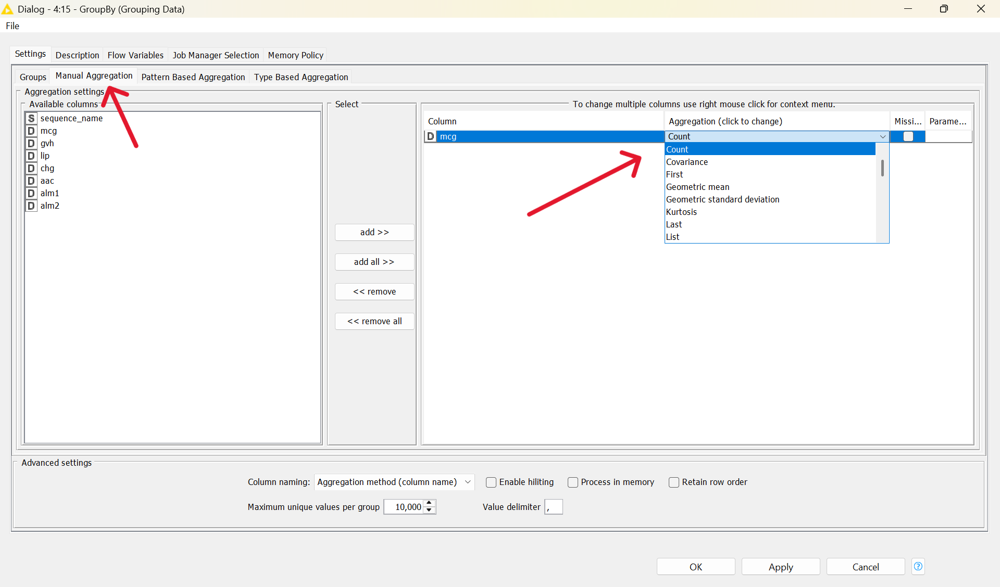
Jalankan Node tersebut dan pastikan indikatornya berwarnan hijau
Tambahkan Node Bar Chart
Hubungkan Node
Group BydenganBar ChartKlik 2x pada Node Bar Chart untuk melakukan konfigurasi
Pilih class sebagai Category Dimension dan Include Count*(mcg) pada Frequency dimensions seperti pada gambar berikut: 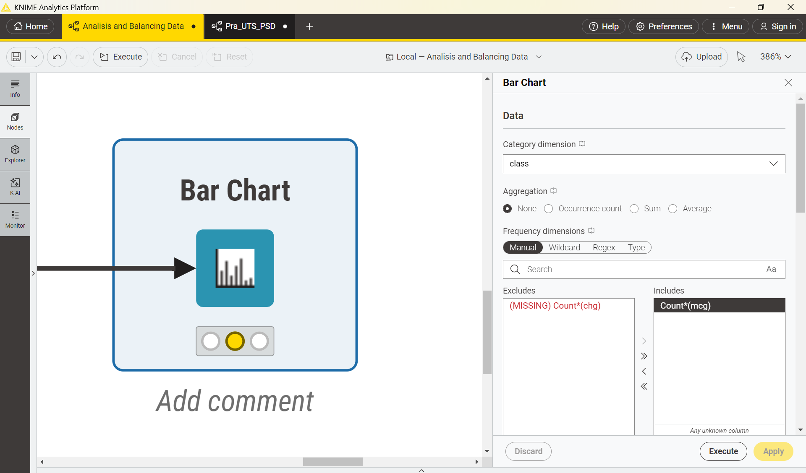
Execute/Jalankan Node Bar Chart, Jika berhasil maka akan menghasilkan tampilan seperti gambar berikut: 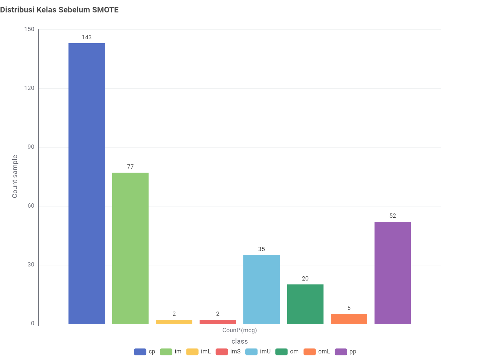
Berikut gambar workspace kita saat ini: 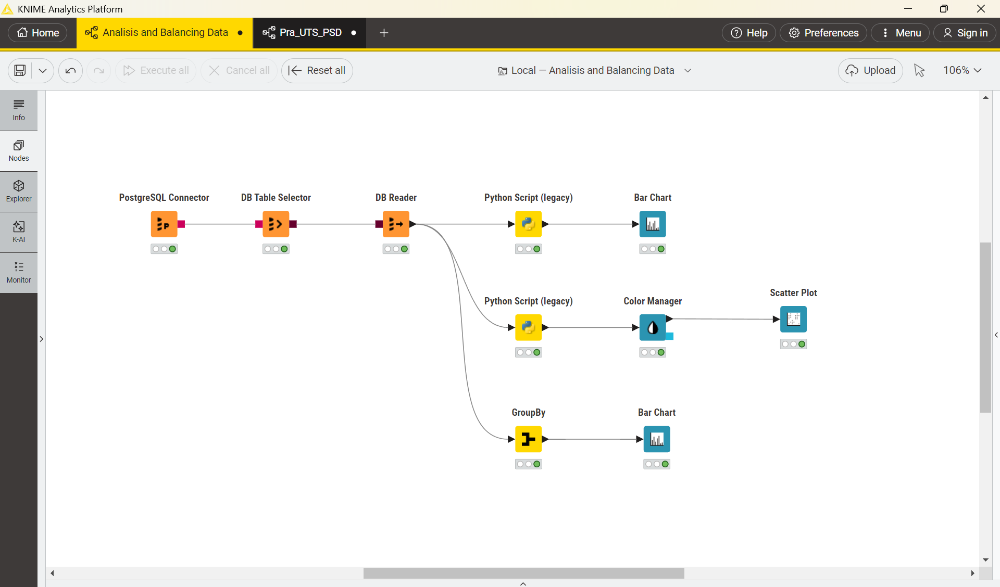
Visualisasi Setelah Balancing#
Visualisasi setelah balancing sama seperti pada tahap visualisasi sebelum balancing. Hanya saja kita perlu tambahkan Node Script Python (Legacy) sebelum visualisasi yang akan digunakan untuk memasukkan script python balancing dengan teknik oversampling menggunakan SMOTE.
Tambahkan Node Script Python (Legacy)
Hubungkan Node
DB ReaderdenganScript Python (Legacy)Klik 2x pada Node Script Python (Legacy) untuk memasukkan script python berikut:
from imblearn.over_sampling import SMOTE
import pandas as pd
df = input_table_1.copy()
X = df.drop(['class', 'sequence_name'], axis=1)
y = df['class']
# Terapkan SMOTE
# n_neighbors otomatis (harus < min_class_count)
min_class_count = df['class'].value_counts().min()
n_neighbors = min(1, min_class_count - 1)
smote = SMOTE(random_state=42, k_neighbors=n_neighbors)
X_res_smote, y_res_smote = smote.fit_resample(X, y)
# Dataframe hasil balancing dengan SMOTE
df_res_smote = pd.DataFrame(X_res_smote, columns=X_res_smote.columns)
df_res_smote['class'] = y_res_smote
output_table_1 = df_res_smote
Klik ‘OK’ pada Dialog
Execute/Jalankan Node Python Script (Legacy)
Untuk Visualisasi, Copy Node Group By dan Bar Chart yang sudah kita buat sebelum balansing
Hubungkan Node
Python Script (Legacy)denganGroup BydanGroup BydenganBar ChartExecute/Jalankan Node Group By dan Bar Chart, Jika berhasil maka akan menghasilkan tampilan seperti gambar berikut: 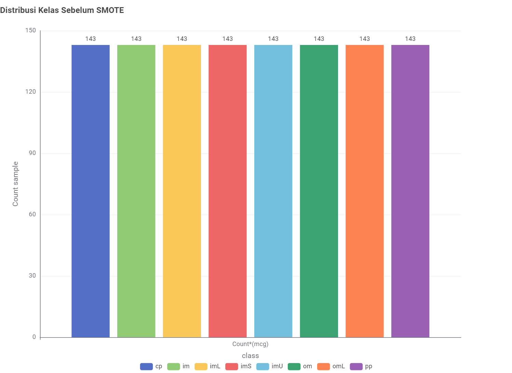
Voila! Kita sudah berhasil melakukan balancing data menggunakan teknik oversampling SMOTE pada software KNIME.
Berikut gambar workspace akhir yang berhasil dibuat: 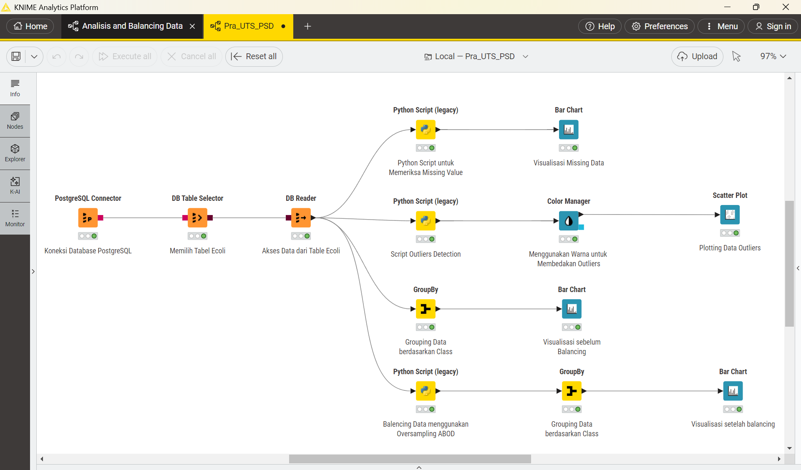 Anda bisa tambahkan komentar di tiap Node untuk menjelaskan fungsinya.